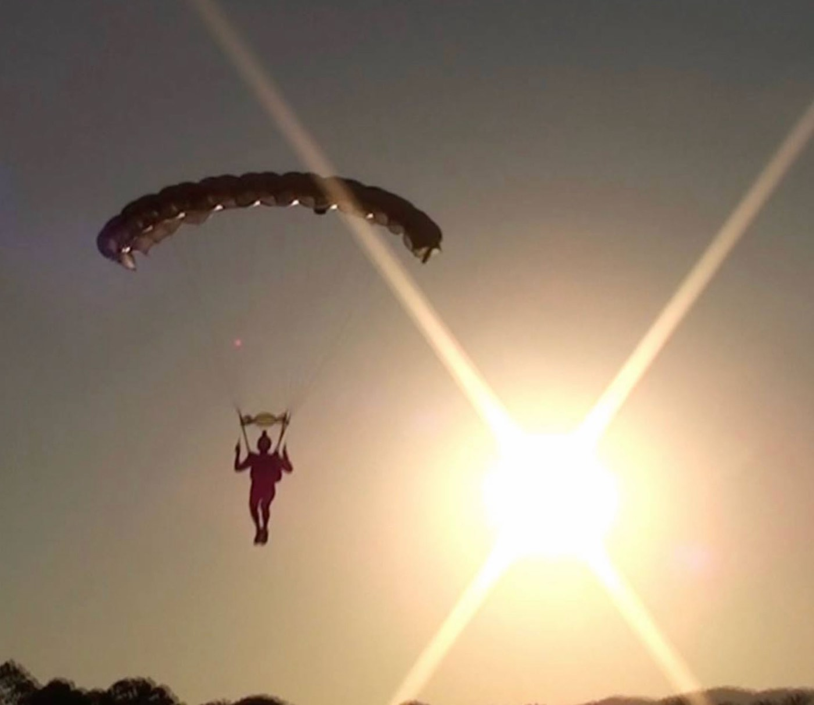
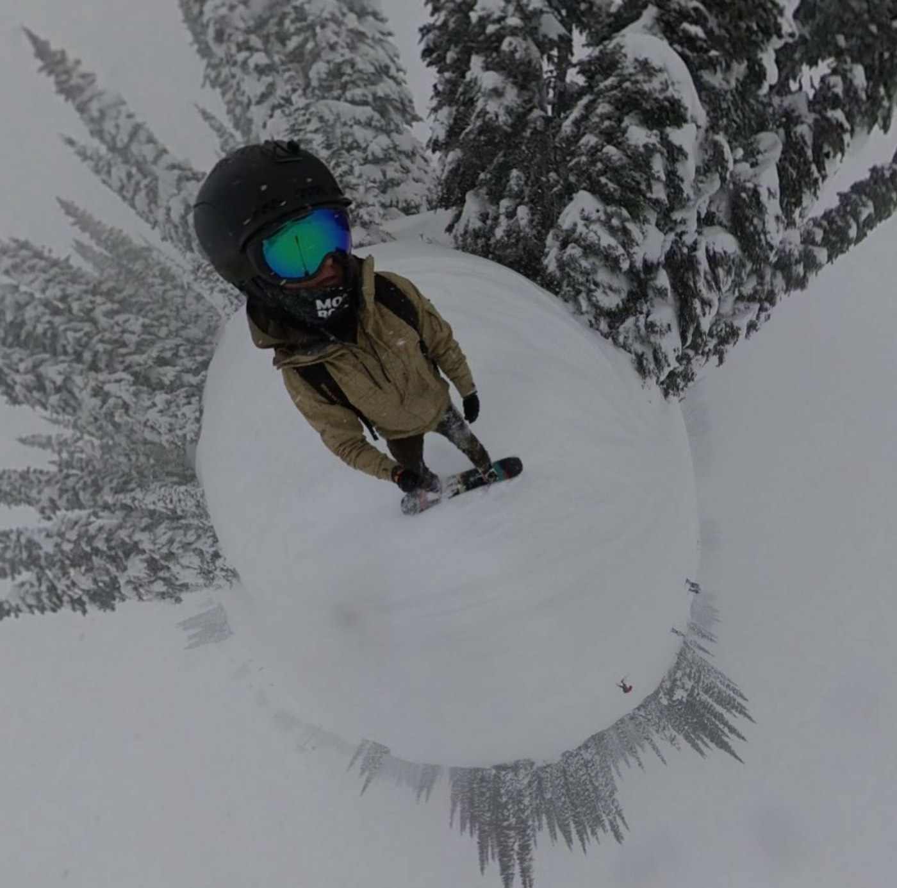
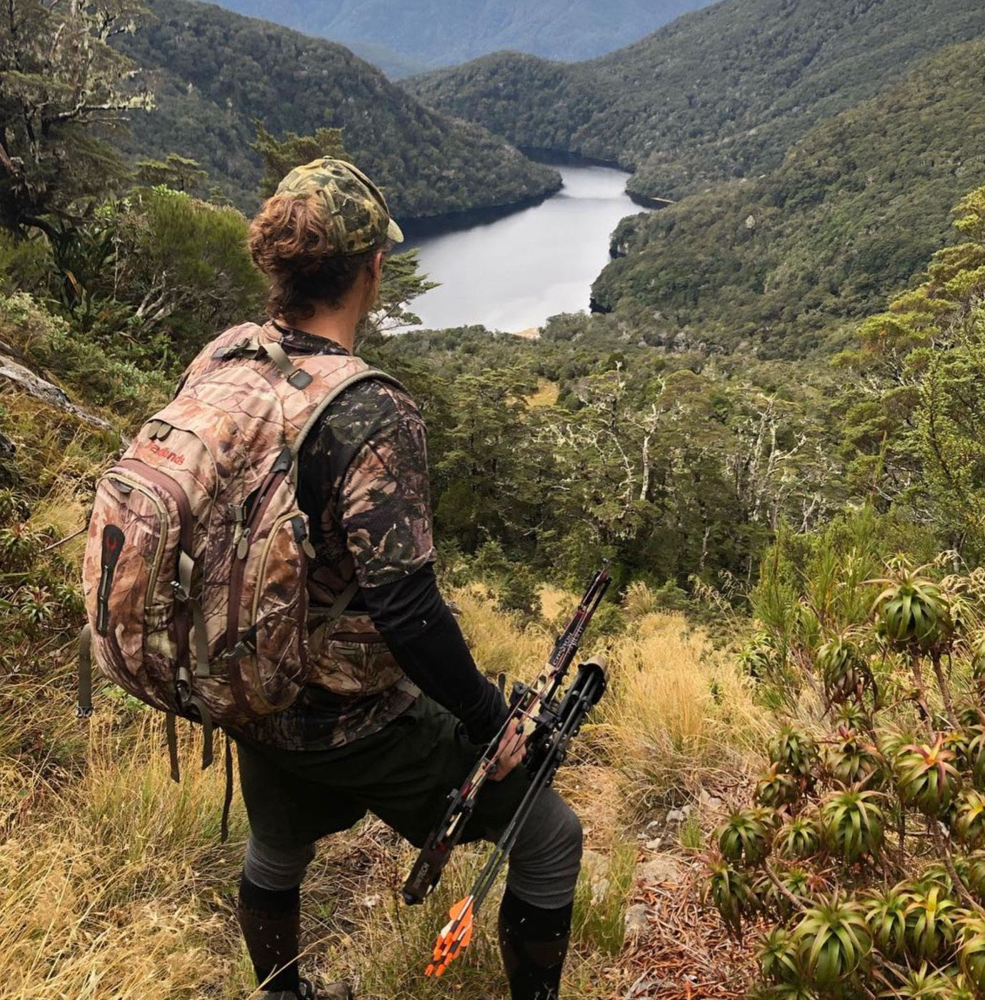
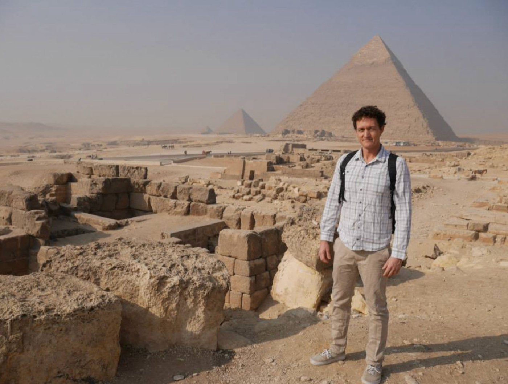
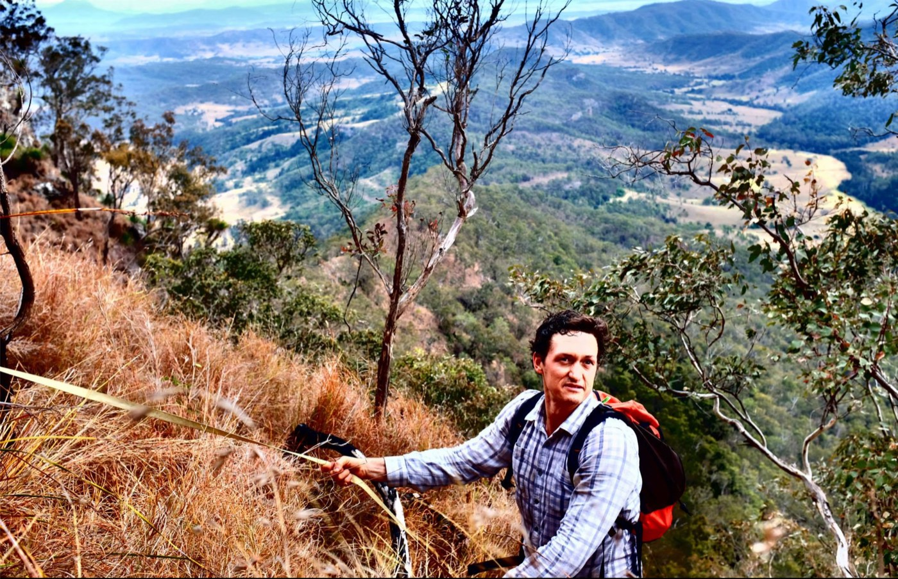
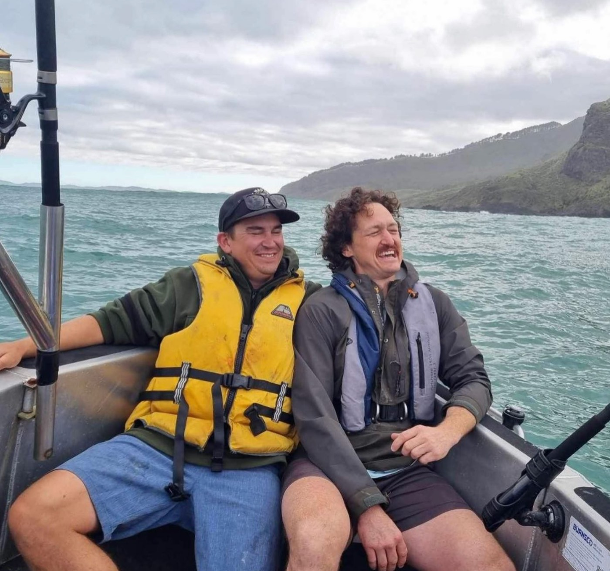
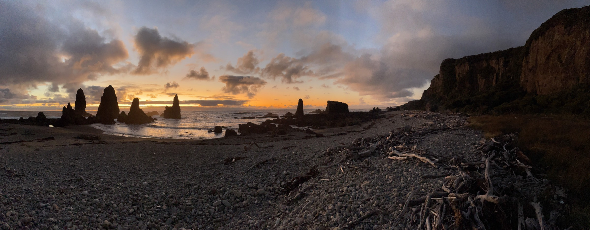

Stage 5 · Live big · 1 of 2
A Life Worth Showing Up For
“The opposite of addiction is not sobriety. The opposite of addiction is connection.”
Johann Hari
Sobriety is not the goal. The goal is the life sobriety makes possible. The bar is not "don't drink today." The bar is "build a life big enough that drinking doesn't fit in it." This page is about that life — the full, loud, lived-out version. It's built on connection: to people, to place, to the things that pull you out of your head.
What Drinking Was Actually Doing
Alcohol was never just a chemical. It was a substitute for something. Adrenaline. Identity. Story. Connection. A reason to be in a room. A reason to talk to a stranger. A way to feel like a person.
When you stop, those needs do not go away. They just stop being met by something that was killing you. The work of long-term sobriety is finding what actually meets them — and most of it turns out to be more interesting than the bottle ever was. You just couldn't see it because you were too numb.
What's Actually Possible
This is not a complete list. It's the kind of list someone in early sobriety needs to see — concrete proof that the next chapter is not smaller, it's just clearer.

Snow Seasons
Skiing or snowboarding a full season — Whistler, Revelstoke, Niseko, Hakuba, Banff. The mountain doesn't care if you're hungover, it just punishes you. Sober, the days get longer, the lines shorter, the body holds up.

Skydiving
Once is enough to change the way you think about fear. Sober, the rush is real and clean. There is no chemical equivalent to actually jumping out of a plane.

Surf
Byron, the Gold Coast, the Sunshine Coast — there's a reason Australian sobriety culture is more outdoor and less basement. Cold water, sunrise, paddling out. The kind of tired that fixes things.

Hunting & the Backcountry
Multi-day trips. Real maps. Real weather. Knowing where your meat came from. Time off-grid changes how you think about almost everything, including yourself.

Travel
Travelling sober is travelling. You remember it. You wake up early. You meet people who aren't drunk. You see the country instead of the inside of bars that all look the same in every city.

Hiking
Springbrook, Lamington. Day walks, multi-day tramps, mountains. A pair of boots, a map, water — the cheapest, most repeatable kind of adventure. Builds legs and quiets the head at the same rate.

Fishing
Lake, river, surf, deep water. The kind of patience that drinking made impossible. Hours of nothing, then a moment of something. Best done with one good friend and no phone reception.
Bike, Trail, Ride
Mountain biking, gravel, road, BMX. Long rides on quiet mornings. The cardio fixes the head, the speed gives back what alcohol used to fake.

Why Adventure, Specifically
Recovery culture often skews indoor — meetings, journals, therapy rooms, podcasts. All necessary. But for someone in their 20s who's used to being the person who'd do anything once, indoor-only sobriety can feel like a sentence. The body still wants to do things. The story still wants to be told.
Adventure is not a replacement for the inner work. It's the reason you do the inner work. The support you keep up on weekday evenings is so you can be on the mountain on the weekend. The therapy session is so you can be present on the trip. The early bedtime is so you can wake up at five and paddle out.
What it actually does
- Replaces the chemical hit with a real one — earned, not borrowed
- Gives you a body that works and a head that's quieter
- Creates stories that aren't about drinking
- Puts you around people who chose this on purpose
- Builds an identity that doesn't depend on what's in your glass
- Will allow you to feel connected to this beautiful world
Where to Start
The first sober adventure does not have to be big. The first ones I went on were day hikes in Springbrook and Lamington National Park. The next was a half ironman with my friends. Then a snowboarding trip with friends. Next thing I knew, I'd gotten into skydiving.
Pick the smallest version of something you've always thought looked good and do that this month. If it sticks, do the bigger version. If it doesn't, try a different one. The point is to start collecting evidence — that the life on this side of the drink is not smaller. It's the one you couldn't access or you never knew existed.
Rules of thumb
- Keep your support — adventure is on top of the foundation, not instead of it
- Pick activities where staying sober is part of the safety case (mountain, water, height) — your body will thank you for the alignment
- Travel light, travel cheap, do the trip you can actually afford and not the one Instagram tells you to do
- Bring your tools — phone numbers, a list of support options for where you're going, your routine
- Find one person who knows where you are and how you're doing
This Month
One adventure you couldn't have done drunk
Could be a 6 a.m. trail. Could be a surf lesson. Could be a flight to somewhere you've been putting off for ten years. Pick something. Book it. Do it. Then come back and pick the next one. This is how the life gets built.